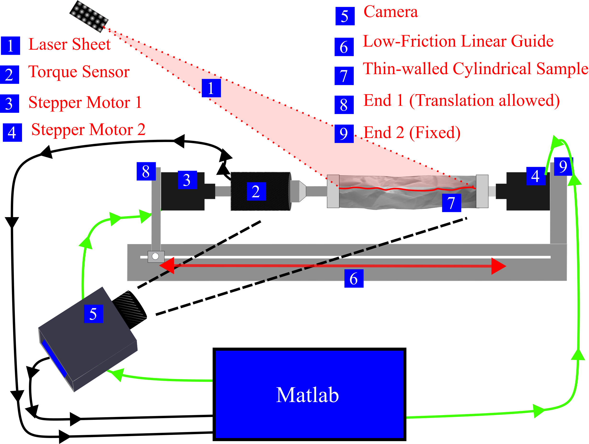
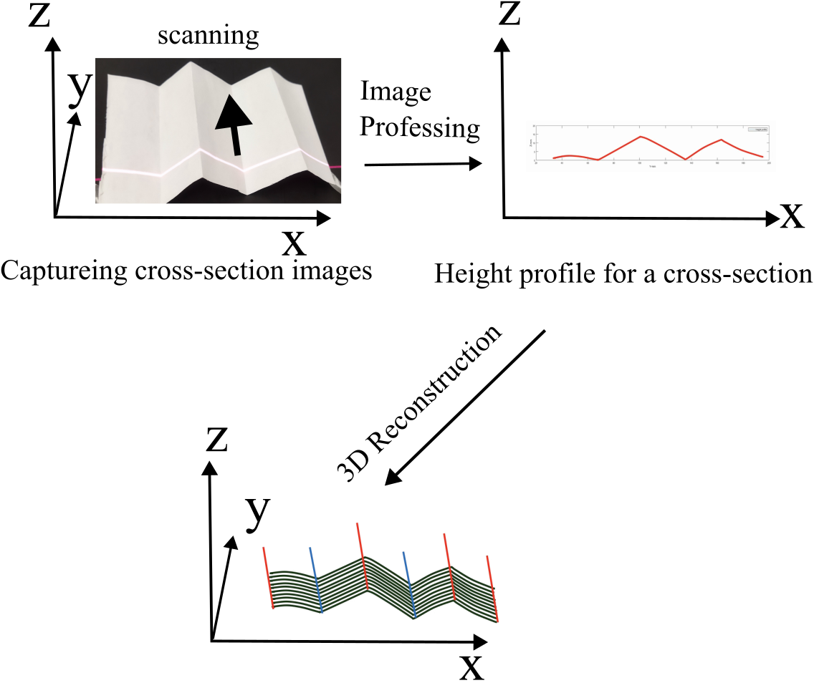
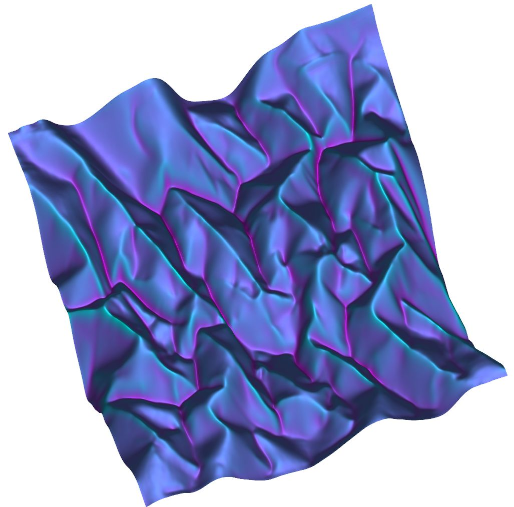

Engineering & Systems Integration Portfolio
Operating at the intersection of physics and engineering, I built fully automated experimental test systems by integrating custom 3D-printed mechanics with precision stepper motors and data acquisition hardware. The video on the left demonstrates a custom stepper-motor-driven torsional testing apparatus, which I designed and programmed to apply precise, cyclic twisting loads to thin elastoplastic sheets. This automated setup was critical for executing the hundreds of repeatable crumpling cycles detailed in the publication Memory in Cyclically Crumpled Sheets (Physical Review Research, 2024).
Complementing this mechanical testing rig is the custom 3D laser-sheet profilometer shown on the right. I developed this automated optical scanner to achieve a 50-micron spatial precision, enabling high-resolution topographical mapping of the resulting 100-micron-thick crumpled structures. Together, these systems highlight a complete engineering pipeline encompassing automated hardware control, custom mechanical design, and high-precision metrology.
Left: Automated stepper-motor torsional testing apparatus. Right: Interactive 3D schematic of the custom laser-sheet profilometer. Click and drag to explore the opto-mechanical layout used to achieve 50-micron scanning precision.

Upgraded System Architecture: A fully automated, closed-loop metrology pipeline controlled via MATLAB. By synchronizing the dual stepper motors, the system rotates the cylindrical specimen for complete 360-degree in-situ laser scanning. This eliminates the need to unmount or flatten samples, enabling infinite continuous twist-and-scan fatigue cycles with zero human intervention.

Metrology Pipeline: Step-by-step surface extraction on a baseline folded geometry. The custom MATLAB pipeline isolates the raw laser projection, extracts the 2D height profile (Z vs. X), and stacks sequential cross-sections to generate a complete 3D topological map.

System Capability: Final high-resolution 3D reconstruction demonstrating the system's capability on complex crumpled structures.
To accurately capture rapid mechanical responses during dynamic testing, I needed a high-frequency data acquisition pipeline. I designed and built a custom signal-amplifier circuit using off-the-shelf components to interface with a miniature force sensor. By routing this amplified signal into a National Instruments (NI) analog-to-digital converter sampling at 40 kHz, I achieved high-fidelity mechanical measurements. I then developed custom MATLAB routines to calibrate the raw voltage against known weights and perfectly synchronize the real-time force data with our high-speed optical camera feed.
Precision experimental physics requires bespoke hardware that cannot be bought off the shelf. To support my automated testbeds, I designed custom opto-mechanical mounts, sensor fixtures, and complex structural architectures from scratch using Autodesk Fusion 360. I rapidly iterated on these designs by fabricating components directly in the lab using a mix of SLA (Formlabs) and FDM (Prusa) 3D printing, ensuring perfectly toleranced fits for delicate optical and mechanical sensors.